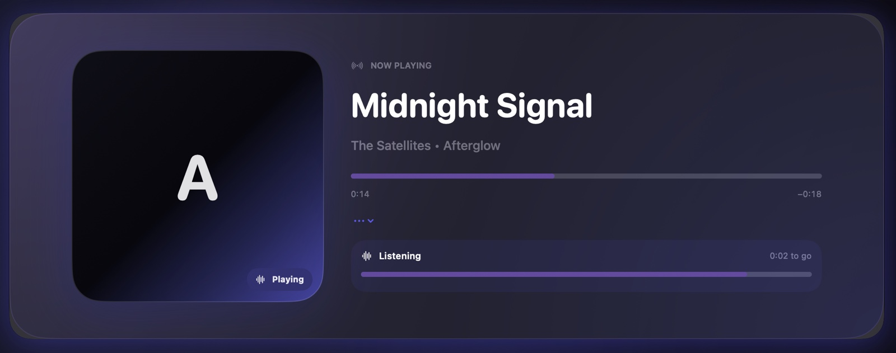

Reads your player
Picks up the current track from Apple Music, Spotify, YouTube Music, or TIDAL—automatically.
Aura 2.0 · macOS · open source
Aura carries the track you’re playing into Discord and Last.fm—from one private-by-default Mac app that never asks you to make an account.
Free and open source · Requires macOS 15 or later

Aura reads what you’re playing and carries it forward—only when you choose.
Picks up the current track from Apple Music, Spotify, YouTube Music, or TIDAL—automatically.
Runs locally with a control center, themes, and Private Mode always one click away.
Publishes Rich Presence with reliable cover art, custom lines, timers, and buttons.
Scrobbles qualified listens reliably, and retries them after an outage instead of dropping them.
 Spotify
Spotify
 YouTube Music
YouTube Music
 TIDAL
TIDAL
No account, no server, no configuration file to edit.
Download the disk image and drag Aura to Applications. Builds are ad-hoc signed, so the first launch uses Control-click → Open.
Sign in to Last.fm and switch on Discord presence. Nothing leaves your Mac until you turn a connection on.
Start a track in any supported app. Aura picks it up, shows it on Discord, and scrobbles it once it qualifies.
Aura runs on your Mac. You decide what leaves it, and when.
Aura never asks you to create an account or connect to its own server.
Your Last.fm credentials and session token are kept in an owner-only local file.
Pause Discord presence and Last.fm updates for a while—or until you return.
Version 2.0
PresenceFM is now Aura. Version 2.0 rebuilds the identity around a single luminous halo, and brings an iPhone companion, stronger queue recovery, and one shared vocabulary for scrobble status across both apps.
appcast.xml..sha256 file.vX.Y.Z-beta.N or vX.Y.Z-rc.N.Open source. No account. All on your Mac.